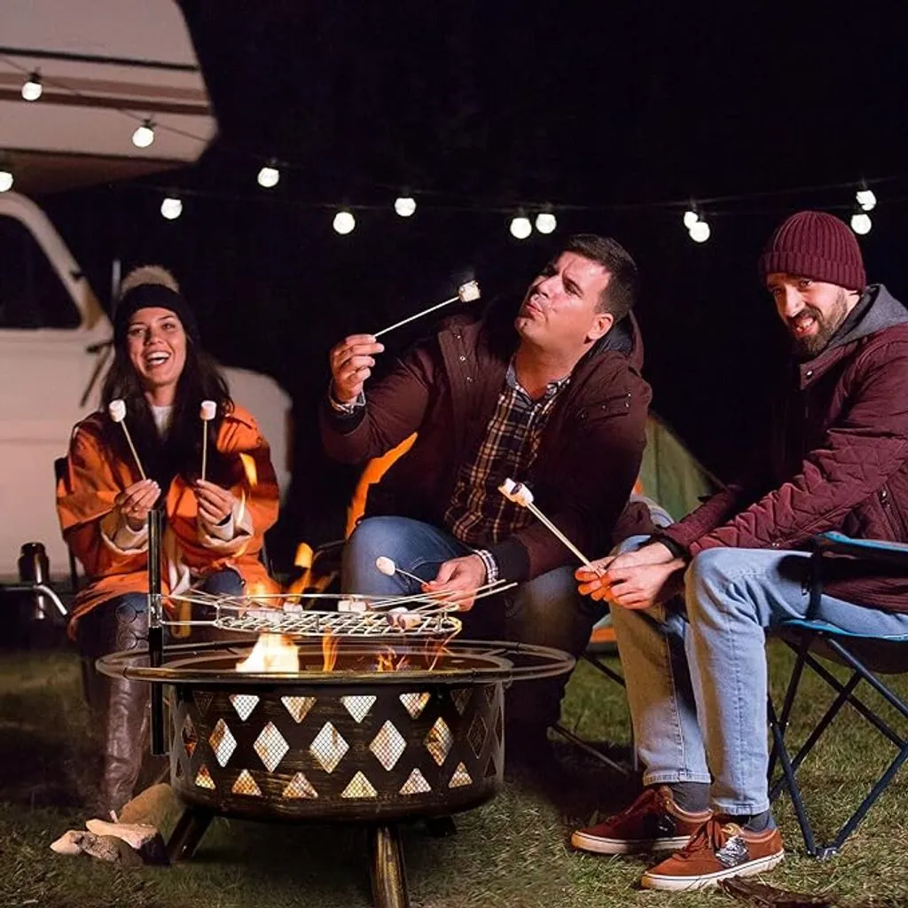
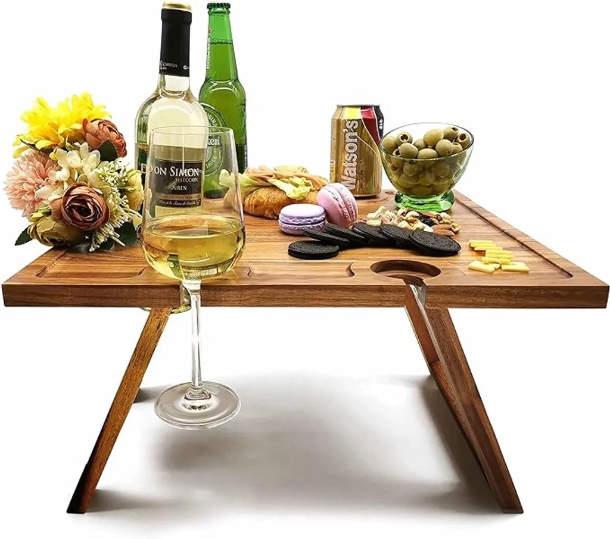
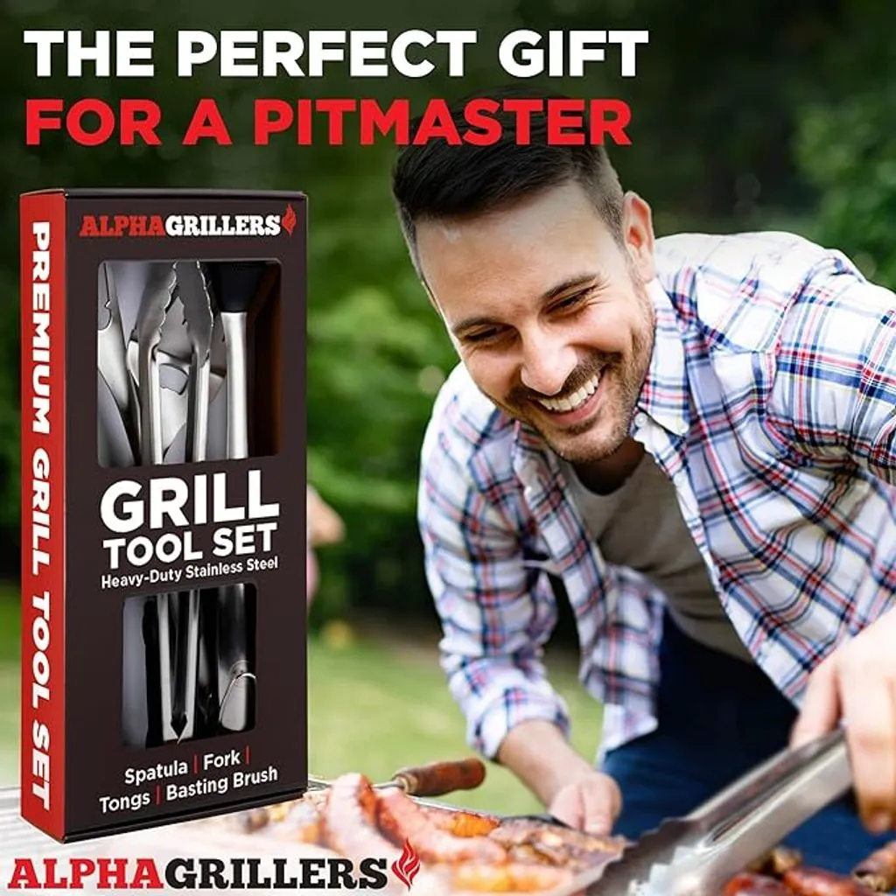
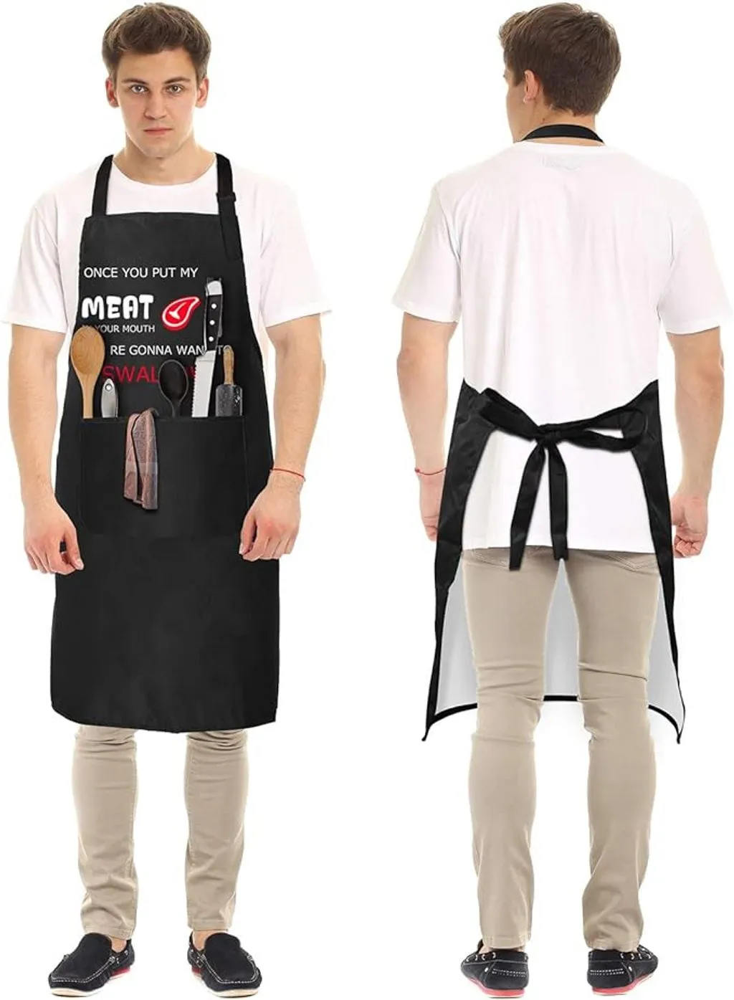

Ultimate Guide to the Best Outdoor Entertaining Gifts of 2024 That Will Wow Your Guests!
Are you looking for the perfect gifts for the outdoor entertainer in your life? Whether it’s a birthday, anniversary, or just a token of appreciation, finding the best outdoor entertaining gifts can elevate your loved one’s outdoor gatherings to a whole new level. Whether you’re planning a backyard barbecue, a cozy bonfire, or a glamorous garden party, these products are sure to impress. From innovative gadgets to stylish décor, we’ve got you covered.
Capture your guests’ attention with the latest in outdoor entertainment technology. In this ultimate guide, we’ll explore the top patio gift ideas, essential outdoor entertaining gifts, and unique and personalized items for 2024. Get ready to create memorable experiences and cultivate moments of joy with your loved ones. Let’s make this summer unforgettable!
What Are the Best Types of Gifts for Outdoor Entertaining?
When it comes to outdoor entertaining, the right gifts can make all the difference. From enhancing the patio ambiance with outdoor decor to adding convenience and practicality with outdoor patio furniture, there are plenty of options to consider in 2023. Let’s delve into the top patio gift ideas, the best grilling accessories to gift, and gift ideas for enhancing outdoor entertaining.
Top Patio Gift Ideas
One of the best gifts for outdoor living is a fire pit, perfect for keeping guests warm and creating a cozy atmosphere during outdoor gatherings. Additionally, a stylish and functional outdoor wine table is an excellent addition to any outdoor patio in 2023, providing a convenient spot for keeping drinks within reach during a camping trip.

Amopatio Fire Pit for Outside
Elevate your outdoor gatherings with this versatile 2-in-1 Wood Burning Fire Pit—a top outdoor entertaining gift. With an overall size of Dia 30” x 23” H and a fire bowl size of Dia 22” x 9” depth, this fire pit serves as a warm companion in winter and transforms into an outdoor BBQ hub for spring and summer. The 360° swivel grill, made of stainless steel, ensures a flexible and enjoyable cooking experience.
Crafted from high-temperature-resistant steel with a unique copper color design, this fire pit is not only durable but also rust-proof and visually appealing. The heavy metal legs provide stability, and the built-in grill and drilled design promote airflow for a strong, natural wood fire. Safety features include a spark screen to prevent flying sparks and a heat shield to protect your lawn and floors.
Enjoy worry-free assembly with clear instructions, and rest assured with our top-notch customer service. Get ready to create memorable moments around the warmth and comfort of this outdoor fire pit.

SASIDO Portable Wine Picnic Table
Elevate your outdoor experiences with this Natural and Sturdy Acacia Wood Folding Wine Table. Crafted from durable Acacia Wood and coated with a food-grade protective oil, this versatile table serves as a charcuterie board and breakfast tray for bed.
The larger surface, measuring 17.3” x 15.7” (L x W), accommodates more food, snacks, and up to 4 wine or champagne glasses. Designed with thoughtful details, the tray surface prevents items from rolling off, and the wine bottle hole doubles as a convenient handle.
No assembly is required, as the table folds into a compact shape for easy portability and storage. Its elegant and stylish boho design makes it ideal for luxury picnics, beach gatherings, outdoor concerts, and more.
Gift this premium table for Christmas, Mother’s Day, birthdays, housewarmings, weddings, or any celebration, providing a reliable and stylish addition to your outdoor moments.
Best Grilling Accessories to Gift
For the grill masters on your 2024 gift list, consider smokeless stainless steel grilling tools or a personalized apron to elevate their outdoor patio grilling experience. These outdoor patio gifts are not only practical but also add a touch of elegance to the outdoor cooking space and can help find the perfect outdoor ambience in 2023.

Alpha Grillers Grill Set Heavy Duty BBQ Accessories
Upgrade your grilling game with this BBQ Accessories Grill Tools Set—a perfect outdoor entertaining gift for dad. Crafted with reliability in mind, this set includes a grill spatula, BBQ tongs, fork, and a basting brush, all made from extra-thick, rust-resistant stainless steel.
The extra-long 18” basting brush with a silicone brush head ensures even sauce application. The BBQ spatula features a handy bottle opener and serrated edge, while the lockable BBQ tongs have scalloped grips for easy storage.
The extra-sharp stainless steel BBQ fork effortlessly skewers meats and veggies. Suitable for all grill types, this set makes an excellent Father’s Day or Christmas gift for dad, presented in a stylish Alpha Grillers box.
Enjoy quality BBQ tools with a lifetime guarantee, upgrade your grilling experience, and make it memorable.

BBQ Grill Apron with 2 Pockets
Bring humor to your grilling sessions with this custom-print funny apron, adding a touch of fun to your barbeque experience. Designed for grill masters, this unique black apron is a perfect fit for everyone, featuring an adjustable neck and waist strap with two large pockets.
Made from heavy-duty thick cotton, it’s easy to wash without fading or peeling, making it ideal for cooking, grilling, picnics, parties, BBQ, and camping.
The functional design covers the entire front to keep you clean and two pockets provide space for spice jars and utensils.
A wonderful gift for birthdays, Valentine’s Day, Mother’s Day, Father’s Day, Christmas, Thanksgiving, housewarming, or any grill-themed party.
Gift Ideas for Enhancing Outdoor Entertaining
When it comes to finding the perfect gifts for outdoor entertaining, the options are as vast as the great outdoors itself. Whether your loved one is an avid grill master or simply enjoys hosting gatherings in their backyard, there are plenty of thoughtful and practical gifts that can elevate their outdoor entertainment experience.
Bluetooth Speakers:
To set the mood for any outdoor gathering, consider gifting high-quality Bluetooth speakers. These portable devices allow your loved one to effortlessly stream their favorite tunes, creating a lively and upbeat atmosphere. Look for speakers that are durable and weather-resistant, ensuring they can withstand the elements during outdoor festivities.
Outdoor Beer Tumblers:
For those who appreciate a cold beverage while enjoying the outdoors, outdoor beer tumblers make for an excellent gift. These insulated tumblers help keep drinks cold, making them perfect for sipping a refreshing beer or any other beverage of choice. Choose designs that are not only functional but also stylish, adding a touch of sophistication to outdoor gatherings.
Portable Grill:
For the barbecue enthusiast, a portable grill is a fantastic gift idea. Whether they enjoy camping, picnics, or tailgating, a compact and easy-to-carry grill allows them to indulge in their love for grilling wherever they go. Look for grills with features like adjustable heat settings and easy assembly for a seamless outdoor cooking experience.
Outdoor Games:
Enhance the entertainment factor of outdoor gatherings with fun and engaging games. From cornhole and bocce ball to giant Jenga, these games add a playful element to any outdoor party. Choose games that are easy to set up and suitable for various age groups, ensuring everyone can join in on the fun.
Solar-Powered String Lights:
Create a magical ambiance in the outdoor space with solar-powered string lights. These eco-friendly lights charge during the day and illuminate the night, providing a warm and inviting glow. Your loved one can use them to decorate their patio, garden, or any outdoor area, transforming it into a cozy haven for evening gatherings.
Picnic Set:
A complete picnic set makes for a thoughtful gift for those who enjoy dining al fresco. Look for sets that include a durable picnic blanket, stylish plates and utensils, and perhaps even a built-in cooler compartment. This versatile gift allows your loved one to effortlessly organize and enjoy outdoor meals with friends and family.
Mosquito Repellent Accessories:
Ensure that outdoor parties are bug-free by gifting mosquito repellent accessories. From stylish citronella candles to wearable mosquito repellent bracelets, these items help create a comfortable and enjoyable outdoor environment. Your loved one can focus on entertaining guests without the nuisance of pesky insects.
In conclusion, the best outdoor entertaining gifts are those that enhance the overall experience, combining practicality with a touch of flair. Whether it’s setting the right mood with music, keeping beverages cool, or adding a playful element with games, these gifts are sure to make outdoor gatherings memorable for your loved ones.
How to Choose the Best Outdoor Entertaining Gifts for 2024
Choosing the perfect patio gift requires careful consideration and thoughtfulness. There are various factors to take into account when selecting outdoor entertaining gifts, along with personalized gift ideas for patio enthusiasts and unique and unusual outdoor entertaining gifts that will leave a lasting impression.
Factors to Consider When Selecting Outdoor Entertaining Gifts
When choosing gifts for outdoor use, consider the recipient’s outdoor space and their specific needs. Whether it’s patio furniture, essential outdoor dining and hosting items, or stylish and functional patio decor, ensuring that the gift complements their outdoor lifestyle is key.
Personalized Gift Ideas for Patio Enthusiasts
Personalized wine and cutting board sets, engraved outdoor entertaining gifts, and stylish and functional patio engraved items add a personal touch, showing your loved one that you’ve put extra thought and effort into their gift.
Unique and Unusual Outdoor Entertaining Gifts
If you’re looking to surprise the outdoor entertainer in your life, consider unique and unusual gifts such as a lantern with citronella candles or an outdoor wine table with built-in storage for keeping drinks chilled throughout the gathering.
Must-Have Outdoor Entertaining Essentials for 2024
Every outdoor entertainer requires certain essentials to ensure their gatherings are a hit. From stainless steel outdoor entertaining accessories to the best patio furniture for gifting, these items are designed to enhance the outdoor living experience and create lasting memories for your loved one.
Stainless Steel Outdoor Entertaining Accessories
Investing in quality stainless steel outdoor accessories is a must. From grilling tools to serving utensils, these items are durable, easy to clean, and perfect for outdoor use.
The Best Patio Furniture for Gifting
Comfortable and stylish patio furniture is essential for creating a welcoming outdoor space. Consider gifting a cozy lounger or cushioned outdoor chairs to ensure your loved one’s guests are relaxed and comfortable.
Essential Outdoor Dining and Hosting Items
Outdoor dining and hosting items such as a portable outdoor wine table, acrylic drinkware, and a fire pit for roasting marshmallows are must-haves for any outdoor gathering. These items elevate the experience and make outdoor entertaining a breeze.
Enhancing Outdoor Entertainment with Stylish and Functional Patio Decor
For those in the know about the art of gifting, the key to enhancing outdoor entertainment lies in the transformative power of stylish and functional patio decor. It’s not just about arranging a few chairs; it’s about creating a space that seamlessly combines charm and practicality. Let’s dive into the realm of outdoor decor, exploring everything from the enchanting glow of patio string lights to the essential must-haves that make outdoor entertaining a breeze.
Creating Ambiance with Patio String Lights
Imagine this: a warm summer evening, a gentle breeze, and the soft glow of patio string lights casting a magical aura over the outdoor space. Patio string lights are the unsung heroes of outdoor ambiance, effortlessly turning a simple patio into a charming haven for gatherings. Their simplicity is their strength, adding a touch of warmth and intimacy to any outdoor event.
Citronella and Other Outdoor Entertaining Must-Haves
No one wants uninvited guests at their outdoor party, especially the buzzing, bothersome kind. Enter citronella candles and lanterns, the guardians of your outdoor space. These essential items not only fend off pesky bugs but also set the stage for uninterrupted outdoor enjoyment. Imagine your loved one and their guests basking in the pleasant glow of candlelight, free from the irritation of unwanted insect intruders. It’s the epitome of outdoor tranquility.
Moreover, don’t stop at citronella. Consider other outdoor entertaining must-haves, like weather-resistant decor and acrylic furniture. These additions ensure that the outdoor space remains a stylish and functional retreat, no matter what Mother Nature has in store.
Acrylic and Waterproof Decor for Patio Spaces
Now, let’s talk about the backbone of a chic and practical patio space—acrylic and waterproof decor. Investing in acrylic drinkware not only adds a touch of modern sophistication but also eliminates the worry of broken glass during lively outdoor gatherings. Combine this with waterproof cushion covers and durable outdoor furniture, and you’ve crafted a low-maintenance oasis for your loved one.
Imagine the ease of entertaining without fretting over accidental spills or sudden rain showers. The combination of style and functionality in acrylic and waterproof decor ensures that the outdoor space remains inviting and easy to maintain, embodying the perfect balance between aesthetic appeal and practicality.
In conclusion, when it comes to gifting for outdoor entertainment, it’s not just about finding items; it’s about curating an experience. From the enchanting glow of patio string lights to the essential citronella defenders and the practical elegance of acrylic and waterproof decor, these gifts go beyond the ordinary, creating an outdoor space that your loved one will cherish for every gathering to come.
Ultimate Outdoor Entertaining Gifts: Unique and Personalized Ideas
When it comes to elevating outdoor entertainment, the true connoisseur of gifts knows that the extraordinary lies in the unique and personalized. Step beyond the ordinary with a selection of outdoor entertaining items tailored to your loved one’s distinct tastes and preferences. From personalized wine and cutting board sets that grace the wine table with elegance to engraveable gifts that marry functionality with sentiment, and stylish, patio-perfect engraved items, these ultimate outdoor entertaining gifts are destined to etch unforgettable memories into every outdoor occasion.
Personalized Wine and Cutting Board Sets for a Wine Table
Raise the bar of sophistication at outdoor gatherings with personalized wine and cutting board sets. These bespoke ensembles bring a touch of refinement and individuality to the wine table, showcasing your thoughtful consideration for your loved one’s hosting prowess. Imagine the delight as they unveil a set that not only caters to their practical needs but also bears the mark of personalization, making every sip and slice a cherished moment.
Engraveable Best Outdoor Entertaining Gifts
Go beyond the surface with engraveable outdoor entertaining gifts, where functionality meets sentimental value. Whether it’s stainless steel drinkware that keeps beverages cool during heated conversations or grilling tools that become an extension of culinary creativity, these items are more than just tools; they are enduring reminders of special occasions and the warmth of meaningful connections. The art of engraving transforms the ordinary into the extraordinary, creating lasting mementos that stand the test of time.
Stylish and Functional Patio Engraved Items
For the outdoor space that reflects personality and style, consider gifting stylish and functional patio engraved items. An engraved outdoor wine table becomes a centerpiece of conversation, a testament to your loved one’s unique taste. Picture an engraved fire pit casting a warm glow over gatherings, creating an ambiance that is both personalized and inviting. These items not only serve practical purposes but also carry sentimental value, turning the outdoor space into a canvas of cherished memories.
Conclusion
In conclusion, the ultimate guide to the best outdoor entertaining gifts of 2024 has presented a wide range of options that are sure to impress your guests. From high-quality grills to stylish patio furniture, these gifts are designed to elevate any outdoor gathering. But the list doesn’t stop here - keep reading for more gifting ideas that will help you create unforgettable experiences for your friends and family.